クロー(闘士) をドロップするmob一覧
一覧ページへ
| 両刀骸骨戦士 | アンデット | 一般1 | |||||||
|---|---|---|---|---|---|---|---|---|---|
 | 片手剣(410) | 弓(270) | 矢(410) | 兜・帽子(230) | 槍投擲機(210) | 帰還(160) | クロー(410) | 銃(270) | 魔弾(410) |
| 防御骸骨戦士 | アンデット | 一般2 | |||||||
 | 片手剣(380) | 槍(250) | 弾(380) | 兜・帽子(210) | 槍投擲機(190) | 帰還(150) | クロー(380) | 箒(250) | |
| 骸骨剣士 | アンデット | 一般3 | |||||||
 | 片手剣(360) | 弓(240) | 矢(360) | 兜・帽子(200) | 槍投擲機(180) | 帰還(140) | クロー(360) | 銃(240) | 魔弾(360) |
| 死の双剣士 | アンデット | セミ1 | |||||||
 | 片手剣(390) | 槍(260) | 鍵(30) | 兜・帽子(220) | 槍投擲機(200) | 帰還(160) | クロー(390) | 箒(260) | |
| 地獄の双剣 | アンデット | ボス1 | |||||||
| 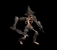 | 片手剣(470) | 弓(310) | 鍵(50) | 兜・帽子(260) | 槍投擲機(240) | 帰還(190) | クロー(470) | 銃(310) | |
| リビングメイル | アンデット | 一般2 | |||||||
| 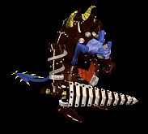 | 弓(380) | 片手剣(250) | 盾(380) | 鎧(210) | 手首(190) | 能力向上1(150) | クロー(250) | 銃(380) | |
| 鎧霊 | アンデット | 一般3 | |||||||
 | 弓(360) | 片手剣(240) | 弾(360) | 鎧(200) | 首(180) | 能力向上1(140) | クロー(240) | 銃(360) | |
| 守護鎧 | アンデット | セミ1 | |||||||
| 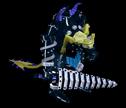 | 弓(390) | 片手剣(260) | 盾(390) | 鎧(220) | 首(200) | 能力向上1(160) | クロー(260) | 銃(390) | |
| ハンター | 人間 | 一般1 | |||||||
| 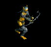 | 弓(410) | 片手剣(270) | 矢(410) | グローブ(230) | 手首(210) | 腕刺青(150) | クロー(270) | 銃(410) | 魔弾(410) |
| アーチャー | 人間 | 一般2 | |||||||
 | 弓(380) | 片手剣(250) | 矢(380) | グローブ(210) | 手首(190) | 腕刺青(160) | クロー(250) | 銃(380) | 魔弾(380) |
| シューター | 人間 | 一般3 | |||||||
 | 弓(360) | 片手剣(240) | 矢(360) | グローブ(200) | 手首(180) | 腕刺青(170) | クロー(240) | 銃(360) | 魔弾(360) |
| スナイパー | 人間 | セミ1 | |||||||
 | 弓(390) | 片手剣(260) | 矢(390) | グローブ(220) | 手首(200) | 腕刺青(180) | クロー(260) | 銃(390) | 魔弾(390) |
| ブラックエルフ | 人間 | ボス1 | |||||||
 | 弓(470) | 片手剣(310) | イベント(470) | グローブ(260) | 手首(240) | 腕刺青(190) | クロー(310) | 銃(470) | |
| エルフ戦士 | 人間 | 一般3 | |||||||
| 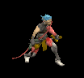 | 片手剣(360) | 弓(240) | 矢(360) | 鎧(200) | 指輪(180) | 腕刺青(120) | クロー(360) | 銃(240) | 魔弾(360) |
| エルフ暗殺者 | 人間 | 一般4 | |||||||
| 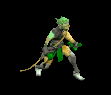 | 片手剣(300) | 投擲(200) | 盾(300) | 兜・帽子(170) | 指輪(150) | 腕刺青(130) | クロー(300) | ||
| エルフ巡察者 | 人間 | セミ1 | |||||||
 | 片手剣(390) | 弓(260) | 矢(390) | 兜・帽子(220) | 指輪(200) | 腕刺青(140) | クロー(390) | 銃(260) | 魔弾(390) |
| エルフ騎士 | 人間 | セミ2 | |||||||
 | 片手剣(420) | 槍(280) | 盾(420) | 鎧(230) | 指輪(210) | 腕刺青(150) | クロー(420) | 箒(280) | |
| エルフ王 | 人間 | ボス3 | |||||||
| 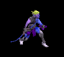 | 片手剣(510) | 弓(340) | 矢(510) | 鎧(280) | 指輪(260) | 腕刺青(160) | クロー(510) | 銃(340) | 魔弾(510) |
| 鷲戦士 | 悪魔 | 一般1 | |||||||
 | 片手剣(410) | 両手剣(270) | 盾(410) | グローブ(230) | 手首(210) | 腕刺青(110) | 鎌(270) | クロー(410) | |
| 鷲闘士 | 悪魔 | 一般2 | |||||||
 | 片手剣(380) | 弓(250) | 盾(380) | グローブ(210) | 手首(190) | 腕刺青(120) | クロー(380) | 銃(250) | |
| 鷲狂戦士 | 悪魔 | 一般3 | |||||||
 | 片手剣(360) | 弓(240) | 矢(360) | グローブ(200) | 手首(180) | 腕刺青(130) | クロー(360) | 銃(240) | 魔弾(360) |
| 鷲剣士 | 悪魔 | セミ1 | |||||||
 | 片手剣(390) | 両手剣(260) | 盾(390) | グローブ(220) | 手首(200) | 腕刺青(140) | 鎌(260) | クロー(390) | |
| 鷲王 | 悪魔 | ボス1 | |||||||
 | 片手剣(470) | 弓(310) | 盾(470) | グローブ(260) | 手首(240) | 腕刺青(150) | クロー(470) | 銃(310) | |
| ブレイマ | 悪魔 | セミ3 | |||||||
| 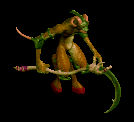 | 槍(450) | 片手剣(300) | 弾(450) | 職業鎧(250) | 爪(230) | 特殊1(180) | クロー(300) | 箒(450) | |
| ストーンキーパー | 悪魔 | ボス2 | |||||||
 | none(490) | 片手剣(330) | 鍵(490) | 足(270) | 爪(250) | 宝石(200) | クロー(330) | ||
| スパイダー | 動物 | 一般1 | |||||||
 | 片手剣(410) | 投擲(270) | 矢(410) | グローブ(230) | 首(210) | 帰還(160) | クロー(410) | 魔弾(410) | |
| フェイズスパイダ | 動物 | 一般2 | |||||||
| 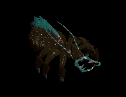 | 片手剣(380) | 投擲(250) | 矢(380) | グローブ(210) | 首(190) | 帰還(150) | クロー(380) | 魔弾(380) | |
| ソードスパイダー | 動物 | 一般3 | |||||||
 | 片手剣(360) | 槍(240) | 矢(360) | グローブ(200) | 首(180) | 能力向上1(140) | クロー(360) | 箒(240) | 魔弾(360) |
| ウィーブウィドウ | 動物 | セミ1 | |||||||
 | 片手剣(390) | 槍(260) | 矢(390) | グローブ(220) | 首(200) | 帰還(160) | クロー(390) | 箒(260) | 魔弾(390) |
| アラクノーイド | 動物 | ボス1 | |||||||
 | 片手剣(470) | 投擲(310) | 矢(470) | グローブ(260) | 首(240) | 宝石(190) | クロー(470) | 魔弾(470) | |
| リーチ | 動物 | 一般2 | |||||||
| 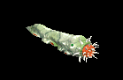 | 鈍器(380) | 片手剣(250) | イベント(380) | マント(210) | 冠(190) | 帰還(150) | クロー(250) | ||
| クローラー | 動物 | 一般4 | |||||||
 | 鈍器(300) | 片手剣(200) | イベント(300) | マント(170) | 冠(150) | 帰還(120) | クロー(200) | ||
| ニックス | 神獣 | 一般2 | |||||||
 | クロー(250) | 鈍器(100) | 片手剣(250) | ||||||
| メロウ | 神獣 | 一般3 | |||||||
 | クロー(240) | 鈍器(100) | 片手剣(240) | ||||||
| マーマン | 神獣 | 一般4 | |||||||
 | クロー(200) | 鈍器(100) | 片手剣(200) | ||||||
| マーマンファイタ | 神獣 | セミ2 | |||||||
 | クロー(280) | 鈍器(100) | 片手剣(280) | ||||||
| トリトン | 神獣 | ボス2 | |||||||
| 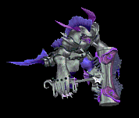 | クロー(330) | 鈍器(100) | 片手剣(330) | ||||||
| ティンバーマン | 神獣 | 一般4 | |||||||
 | クロー(200) | 杖(100) | 片手剣(200) | 本(100) | |||||
| ホワイトシャドー | 神獣 | セミ2 | |||||||
 | 鎌(280) | クロー(100) | 片手剣(100) | 両手剣(280) | |||||
| 両刀骸骨戦士Ex | アンデット | 一般1 | |||||||
| 片手剣(410) | 弓(270) | 矢(410) | 兜・帽子(230) | 槍投擲機(210) | 帰還(160) | クロー(410) | 銃(270) | 魔弾(410) |
| 防御骸骨戦士Ex | アンデット | 一般2 | |||||||
| 片手剣(380) | 槍(250) | 弾(380) | 兜・帽子(210) | 槍投擲機(190) | 帰還(150) | クロー(380) | 箒(250) | |
| 骸骨剣士Ex | アンデット | 一般3 | |||||||
| 片手剣(360) | 弓(240) | 矢(360) | 兜・帽子(200) | 槍投擲機(180) | 帰還(140) | クロー(360) | 銃(240) | 魔弾(360) |
| 死の双剣士Ex | アンデット | セミ1 | |||||||
| 片手剣(450) | 槍(300) | 鍵(30) | 兜・帽子(250) | 槍投擲機(230) | 帰還(180) | クロー(450) | 箒(300) | |
| 地獄の双剣Ex | アンデット | ボス1 | |||||||
| 片手剣(1200) | 弓(800) | 鍵(50) | 兜・帽子(670) | 槍投擲機(600) | 帰還(480) | クロー(1200) | 銃(800) | ||
| リビングメイルEx | アンデット | 一般2 | |||||||
| 弓(380) | 片手剣(250) | 盾(380) | 鎧(210) | 手首(190) | 能力向上1(150) | クロー(250) | 銃(380) | ||
| 鎧霊Ex | アンデット | 一般3 | |||||||
| 弓(360) | 片手剣(240) | 弾(360) | 鎧(200) | 首(180) | 能力向上1(140) | クロー(240) | 銃(360) | |
| 守護鎧Ex | アンデット | セミ1 | |||||||
| 弓(450) | 片手剣(300) | 盾(450) | 鎧(250) | 首(230) | 能力向上1(180) | クロー(300) | 銃(450) | ||
| ハンターEx | 人間 | 一般1 | |||||||
| 弓(410) | 片手剣(270) | 矢(410) | グローブ(230) | 手首(210) | 腕刺青(150) | クロー(270) | 銃(410) | 魔弾(410) | |
| アーチャーEx | 人間 | 一般2 | |||||||
| 弓(380) | 片手剣(250) | 矢(380) | グローブ(210) | 手首(190) | 腕刺青(160) | クロー(250) | 銃(380) | 魔弾(380) |
| アーチャーEx | 人間 | 一般3 | |||||||
| 弓(360) | 片手剣(240) | 矢(360) | グローブ(200) | 手首(180) | 腕刺青(170) | クロー(240) | 銃(360) | 魔弾(360) |
| スナイパーEx | 人間 | セミ1 | |||||||
| 弓(450) | 片手剣(300) | 矢(450) | グローブ(250) | 手首(230) | 腕刺青(180) | クロー(300) | 銃(450) | 魔弾(450) |
| ブラックエルフEx | 人間 | ボス1 | |||||||
| 弓(1200) | 片手剣(800) | イベント(1200) | グローブ(670) | 手首(600) | 腕刺青(190) | クロー(800) | 銃(1200) | |
| エルフ戦士Ex | 人間 | 一般3 | |||||||
| 片手剣(360) | 弓(240) | 矢(360) | 鎧(200) | 指輪(180) | 腕刺青(120) | クロー(360) | 銃(240) | 魔弾(360) | |
| エルフ暗殺者Ex | 人間 | 一般4 | |||||||
| 片手剣(300) | 投擲(200) | 盾(300) | 兜・帽子(170) | 指輪(150) | 腕刺青(130) | クロー(300) | |||
| エルフ巡察者Ex | 人間 | セミ1 | |||||||
| 片手剣(450) | 弓(300) | 矢(450) | 兜・帽子(250) | 指輪(230) | 腕刺青(140) | クロー(450) | 銃(300) | 魔弾(450) |
| エルフ騎士Ex | 人間 | セミ2 | |||||||
| 片手剣(650) | 槍(430) | 盾(650) | 鎧(360) | 指輪(330) | 腕刺青(150) | クロー(650) | 箒(430) | |
| エルフ王Ex | 人間 | ボス3 | |||||||
| 片手剣(2800) | 弓(1870) | 矢(2800) | 鎧(1560) | 指輪(1400) | 腕刺青(160) | クロー(2800) | 銃(1870) | 魔弾(2800) | |
| 鷲戦士Ex | 悪魔 | 一般1 | |||||||
| 片手剣(410) | 両手剣(270) | 盾(410) | グローブ(230) | 手首(210) | 腕刺青(110) | 鎌(270) | クロー(410) | |
| 鷲闘士Ex | 悪魔 | 一般2 | |||||||
| 片手剣(380) | 弓(250) | 盾(380) | グローブ(210) | 手首(190) | 腕刺青(120) | クロー(380) | 銃(250) | |
| 鷲狂戦士Ex | 悪魔 | 一般3 | |||||||
| 片手剣(360) | 弓(240) | 矢(360) | グローブ(200) | 手首(180) | 腕刺青(130) | クロー(360) | 銃(240) | 魔弾(360) |
| 鷲剣士Ex | 悪魔 | セミ1 | |||||||
| 片手剣(450) | 両手剣(300) | 盾(450) | グローブ(250) | 手首(230) | 腕刺青(140) | 鎌(300) | クロー(450) | |
| 鷲王Ex | 悪魔 | ボス1 | |||||||
| 片手剣(1200) | 弓(800) | 盾(1200) | グローブ(670) | 手首(600) | 腕刺青(150) | クロー(1200) | 銃(800) | |
| ブレイマEx | 悪魔 | セミ3 | |||||||
| 槍(800) | 片手剣(530) | 弾(800) | 職業鎧(440) | 爪(400) | 特殊1(320) | クロー(530) | 箒(800) | ||
| ストーンキーパーEx | 悪魔 | ボス2 | |||||||
| none(2000) | 片手剣(1330) | 鍵(600) | 足(1110) | 爪(1000) | 宝石(800) | クロー(1330) | ||
| スパイダーEx | 動物 | 一般1 | |||||||
| 片手剣(410) | 投擲(270) | 矢(410) | グローブ(230) | 首(210) | 帰還(160) | クロー(410) | 魔弾(410) | |
| フェイズスパイダEx | 動物 | 一般2 | |||||||
| 片手剣(380) | 投擲(250) | 矢(380) | グローブ(210) | 首(190) | 帰還(150) | クロー(380) | 魔弾(380) | ||
| ソードスパイダーEx | 動物 | 一般3 | |||||||
| 片手剣(360) | 槍(240) | 矢(360) | グローブ(200) | 首(180) | 能力向上1(140) | クロー(360) | 箒(240) | 魔弾(360) |
| ウィーブウィドウEx | 動物 | セミ1 | |||||||
| 片手剣(450) | 槍(300) | 矢(450) | グローブ(250) | 首(230) | 帰還(180) | クロー(450) | 箒(300) | 魔弾(450) |
| アラクノーイドEx | 動物 | ボス1 | |||||||
| 片手剣(1200) | 投擲(800) | 矢(1200) | グローブ(670) | 首(600) | 宝石(480) | クロー(1200) | 魔弾(1200) | |
| リーチEx | 動物 | 一般2 | |||||||
| 鈍器(380) | 片手剣(250) | イベント(380) | マント(210) | 冠(190) | 帰還(150) | クロー(250) | |||
| クローラーEx | 動物 | 一般4 | |||||||
| 鈍器(300) | 片手剣(200) | イベント(300) | マント(170) | 冠(150) | 帰還(120) | クロー(200) | ||
| ニックスEx | 神獣 | 一般2 | |||||||
| 鈍器(380) | 片手剣(250) | 鍵(30) | 鎧(210) | イヤリング(190) | 肩刺青(110) | クロー(250) | ||
| メロウEx | 神獣 | 一般3 | |||||||
| 鈍器(360) | 片手剣(240) | イベント(360) | 鎧(200) | イヤリング(180) | 肩刺青(120) | クロー(240) | ||
| マーマンEx | 神獣 | 一般4 | |||||||
| 鈍器(300) | 片手剣(200) | イベント(300) | 鎧(170) | イヤリング(150) | 肩刺青(130) | クロー(200) | ||
| マーマンファイタEx | 神獣 | セミ2 | |||||||
| 鈍器(650) | 片手剣(430) | イベント(650) | 鎧(360) | イヤリング(330) | 肩刺青(140) | クロー(430) | ||
| トリトンEx | 神獣 | ボス2 | |||||||
| 鈍器(2000) | 片手剣(1330) | 鍵(210) | 鎧(1110) | イヤリング(1000) | 肩刺青(150) | クロー(1330) | |||
| ティンバーマンEx | 神獣 | 一般4 | |||||||
| 杖(300) | 片手剣(200) | HP回復(300) | グローブ(170) | 首(150) | 能力向上1(120) | クロー(200) | 本(300) | |
| ホワイトシャドーEx | 神獣 | セミ2 | |||||||
| 片手剣(650) | 両手剣(430) | 盾(650) | 鎧(360) | 手首(330) | 特殊1(260) | 鎌(430) | クロー(650) | |
| 骸骨サンタ | アンデット | ボス3 | |||||||
 | 弓(1210) | 片手剣(810) | 矢(1210) | グローブ(700) | 手首(610) | 腕刺青(150) | クロー(810) | 銃(1210) | 魔弾(1210) |
| 両刀骸骨戦士Zin | アンデット | 一般1 | |||||||
| 片手剣(1210) | 弓(810) | 矢(1210) | 兜・帽子(670) | 槍投擲機(610) | 帰還(480) | クロー(1210) | 銃(810) | 魔弾(1210) |
| 防御骸骨戦士Zin | アンデット | 一般2 | |||||||
| 片手剣(1380) | 槍(920) | 弾(1380) | 兜・帽子(770) | 槍投擲機(690) | 帰還(550) | クロー(1380) | 箒(920) | |
| 骸骨剣士Zin | アンデット | 一般3 | |||||||
| 片手剣(1560) | 弓(1040) | 矢(1560) | 兜・帽子(870) | 槍投擲機(780) | 帰還(620) | クロー(1560) | 銃(1040) | 魔弾(1560) |
| 死の双剣士Zin | アンデット | セミ1 | |||||||
| 片手剣(650) | 槍(430) | 鍵(10) | 兜・帽子(360) | 槍投擲機(330) | 帰還(260) | クロー(650) | 箒(430) | |
| 地獄の双剣Zin | アンデット | ボス1 | |||||||
| 片手剣(1000) | 弓(670) | 鍵(40) | 兜・帽子(560) | 槍投擲機(500) | 帰還(400) | クロー(1000) | 銃(670) | ||
| リビングメイルZin | アンデット | 一般2 | |||||||
| 弓(1380) | 片手剣(920) | 盾(1380) | 鎧(770) | 手首(690) | 能力向上1(550) | クロー(920) | 銃(1380) | ||
| 鎧霊Zin | アンデット | 一般3 | |||||||
| 弓(1560) | 片手剣(1040) | 弾(1560) | 鎧(870) | 首(780) | 能力向上1(620) | クロー(1040) | 銃(1560) | |
| 守護鎧Zin | アンデット | セミ1 | |||||||
| 弓(650) | 片手剣(430) | 盾(650) | 鎧(360) | 首(330) | 能力向上1(260) | クロー(430) | 銃(650) | ||
| ハンターZin | 人間 | 一般1 | |||||||
| 弓(1210) | 片手剣(810) | 矢(1210) | グローブ(670) | 手首(610) | 腕刺青(150) | クロー(810) | 銃(1210) | 魔弾(1210) | |
| アーチャーZin | 人間 | 一般2 | |||||||
| 弓(1380) | 片手剣(920) | 矢(1380) | グローブ(770) | 手首(690) | 腕刺青(160) | クロー(920) | 銃(1380) | 魔弾(1380) |
| アーチャーZin | 人間 | 一般3 | |||||||
| 弓(1560) | 片手剣(1040) | 矢(1560) | グローブ(870) | 手首(780) | 腕刺青(170) | クロー(1040) | 銃(1560) | 魔弾(1560) |
| スナイパーZin | 人間 | セミ1 | |||||||
| 弓(650) | 片手剣(430) | 矢(650) | グローブ(360) | 手首(330) | 腕刺青(180) | クロー(430) | 銃(650) | 魔弾(650) |
| ブラックエルフZin | 人間 | ボス1 | |||||||
| 弓(1000) | 片手剣(670) | イベント(1000) | グローブ(560) | 手首(500) | 腕刺青(190) | クロー(670) | 銃(1000) | |
| エルフ戦士Zin | 人間 | 一般3 | |||||||
| 片手剣(1560) | 弓(1040) | 矢(1560) | 鎧(870) | 指輪(780) | 腕刺青(120) | クロー(1560) | 銃(1040) | 魔弾(1560) | |
| エルフ暗殺者Zin | 人間 | 一般4 | |||||||
| 片手剣(1200) | 投擲(800) | 盾(1200) | 兜・帽子(670) | 指輪(600) | 腕刺青(130) | クロー(1200) | |||
| エルフ巡察者Zin | 人間 | セミ1 | |||||||
| 片手剣(650) | 弓(430) | 矢(650) | 兜・帽子(360) | 指輪(330) | 腕刺青(140) | クロー(650) | 銃(430) | 魔弾(650) |
| エルフ騎士Zin | 人間 | セミ2 | |||||||
| 片手剣(750) | 槍(500) | 盾(750) | 鎧(420) | 指輪(380) | 腕刺青(150) | クロー(750) | 箒(500) | |
| エルフ王Zin | 人間 | ボス3 | |||||||
| 片手剣(1200) | 弓(800) | 矢(1200) | 鎧(670) | 指輪(600) | 腕刺青(160) | クロー(1200) | 銃(800) | 魔弾(1200) | |
| 鷲戦士Zin | 悪魔 | 一般1 | |||||||
| 片手剣(1210) | 両手剣(810) | 盾(1210) | グローブ(670) | 手首(610) | 腕刺青(110) | 鎌(810) | クロー(1210) | |
| 鷲闘士Zin | 悪魔 | 一般2 | |||||||
| 片手剣(1380) | 弓(920) | 盾(1380) | グローブ(770) | 手首(690) | 腕刺青(120) | クロー(1380) | 銃(920) | |
| 鷲狂戦士Zin | 悪魔 | 一般3 | |||||||
| 片手剣(1560) | 弓(1040) | 矢(1560) | グローブ(870) | 手首(780) | 腕刺青(130) | クロー(1560) | 銃(1040) | 魔弾(1560) |
| 鷲剣士Zin | 悪魔 | セミ1 | |||||||
| 片手剣(650) | 両手剣(430) | 盾(650) | グローブ(360) | 手首(330) | 腕刺青(140) | 鎌(430) | クロー(650) | |
| 鷲王Zin | 悪魔 | ボス1 | |||||||
| 片手剣(1000) | 弓(670) | 盾(1000) | グローブ(560) | 手首(500) | 腕刺青(150) | クロー(1000) | 銃(670) | |
| ブレイマZin | 悪魔 | セミ3 | |||||||
| 槍(900) | 片手剣(600) | 弾(900) | 職業鎧(500) | 爪(450) | 特殊1(360) | クロー(600) | 箒(900) | ||
| ストーンキーパーZin | 悪魔 | ボス2 | |||||||
 | none(1100) | 片手剣(730) | 鍵(1100) | 足(610) | 爪(550) | 宝石(440) | クロー(730) | ||
| スパイダーZin | 動物 | 一般1 | |||||||
| 片手剣(1210) | 投擲(810) | 矢(1210) | グローブ(670) | 首(610) | 帰還(480) | クロー(1210) | 魔弾(1210) | |
| フェイズスパイダZin | 動物 | 一般2 | |||||||
| 片手剣(1380) | 投擲(920) | 矢(1380) | グローブ(770) | 首(690) | 帰還(550) | クロー(1380) | 魔弾(1380) | ||
| ソードスパイダーZin | 動物 | 一般3 | |||||||
| 片手剣(1560) | 槍(1040) | 矢(1560) | グローブ(870) | 首(780) | 能力向上1(620) | クロー(1560) | 箒(1040) | 魔弾(1560) |
| ウィーブウィドウZin | 動物 | セミ1 | |||||||
| 片手剣(650) | 槍(430) | 矢(650) | グローブ(360) | 首(330) | 帰還(260) | クロー(650) | 箒(430) | 魔弾(650) |
| アラクノーイドZin | 動物 | ボス1 | |||||||
| 片手剣(1000) | 投擲(670) | 矢(1000) | グローブ(560) | 首(500) | 宝石(400) | クロー(1000) | 魔弾(1000) | |
| リーチZin | 動物 | 一般2 | |||||||
| 鈍器(1380) | 片手剣(920) | イベント(1380) | マント(770) | 冠(690) | 帰還(550) | クロー(920) | |||
| クローラーZin | 動物 | 一般4 | |||||||
| 鈍器(1200) | 片手剣(800) | イベント(1200) | マント(670) | 冠(600) | 帰還(480) | クロー(800) | ||
| ニックスZin | 神獣 | 一般2 | |||||||
| 鈍器(1380) | 片手剣(920) | 鍵(70) | 鎧(770) | イヤリング(690) | 肩刺青(110) | クロー(920) | ||
| メロウZin | 神獣 | 一般3 | |||||||
| 鈍器(1560) | 片手剣(1040) | イベント(1560) | 鎧(870) | イヤリング(780) | 肩刺青(120) | クロー(1040) | ||
| マーマンZin | 神獣 | 一般4 | |||||||
| 鈍器(1200) | 片手剣(800) | イベント(1200) | 鎧(670) | イヤリング(600) | 肩刺青(130) | クロー(800) | ||
| マーマンファイタZin | 神獣 | セミ2 | |||||||
| 鈍器(750) | 片手剣(500) | イベント(750) | 鎧(420) | イヤリング(380) | 肩刺青(140) | クロー(500) | ||
| トリトンZin | 神獣 | ボス2 | |||||||
| 鈍器(1100) | 片手剣(730) | 鍵(110) | 鎧(610) | イヤリング(550) | 肩刺青(150) | クロー(730) | |||
| ティンバーマンZin | 神獣 | 一般4 | |||||||
| 杖(1200) | 片手剣(800) | HP回復(1200) | グローブ(670) | 首(600) | 能力向上1(480) | クロー(800) | 本(1200) | |
| ホワイトシャドーZin | 神獣 | セミ2 | |||||||
| 片手剣(750) | 両手剣(500) | 盾(750) | 鎧(420) | 手首(380) | 特殊1(300) | 鎌(500) | クロー(750) | |
| セイジ | 人間 | ボス3 | |||||||
| 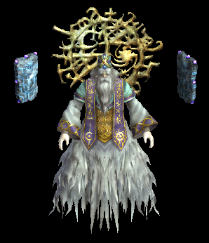 | 弓(1380) | 片手剣(920) | 矢(1380) | グローブ(800) | 手首(690) | 腕刺青(160) | クロー(920) | 銃(1380) | 魔弾(1380) |
| セイジマスター | 人間 | セミ3 | |||||||
 | 弓(1560) | 片手剣(1040) | 矢(1560) | グローブ(900) | 手首(780) | 腕刺青(170) | クロー(1040) | 銃(1560) | 魔弾(1560) |
| ティアメス(上部触手) | 動物 | ボス3 | |||||||
| 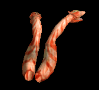 | 弓(1560) | 片手剣(1040) | 矢(1560) | グローブ(900) | 手首(780) | 腕刺青(170) | クロー(1040) | 銃(1560) | 魔弾(1560) |
| ティアメス(本体) | 動物 | ボス3 | |||||||
 | 弓(1560) | 片手剣(1040) | 矢(1560) | グローブ(900) | 手首(780) | 腕刺青(170) | クロー(1040) | 銃(1560) | 魔弾(1560) |
| ティアメス(下部触手) | 動物 | ボス3 | |||||||
 | 弓(1560) | 片手剣(1040) | 矢(1560) | グローブ(900) | 手首(780) | 腕刺青(170) | クロー(1040) | 銃(1560) | 魔弾(1560) |
 | 弓(1560) | 片手剣(1040) | 矢(1560) | グローブ(900) | 手首(780) | 腕刺青(170) | クロー(1040) | 銃(1560) | 魔弾(1560) |
| アークデビル | 悪魔 | ボス3 | |||||||
 | 弓(1560) | 片手剣(1040) | 矢(1560) | グローブ(900) | 手首(780) | 腕刺青(170) | クロー(1040) | 銃(1560) | 魔弾(1560) |
| ドラコリッチ | アンデット | ボス3 | |||||||
| 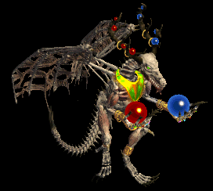 | 弓(1560) | 片手剣(1040) | 矢(1560) | グローブ(900) | 手首(780) | 腕刺青(170) | クロー(1040) | 銃(1560) | 魔弾(1560) |
| ドラコリッチオーブ | アンデット | ボス3 | |||||||
 | 弓(1560) | 片手剣(1040) | 矢(1560) | グローブ(900) | 手首(780) | 腕刺青(170) | クロー(1040) | 銃(1560) | 魔弾(1560) |
| ボーンキメラZin | アンデット | 一般4 | |||||||
 | 片手剣(30) | 首(50) | 牙(90) | 職業鎧(130) | 状態異常回復1(170) | 兜・帽子(200) | クロー(30) | 双剣(90) | |
| ボーンキメラ2 Zin | アンデット | セミ2 | |||||||
 | 片手剣(80) | 首(140) | 牙(250) | 職業鎧(360) | 槍投擲機(470) | 兜・帽子(550) | クロー(80) | 双剣(250) | |
| ボーンキメラ3 Zin | アンデット | ボス1 | |||||||
 | 片手剣(150) | 首(250) | 宝石(450) | CP回復(650) | 肩刺青(850) | HP回復(1000) | クロー(150) | ||
| ボーンキメラ4 Zin | アンデット | ボス2 | |||||||
 | 片手剣(270) | 状態異常回復2(450) | 牙(810) | 職業鎧(1170) | 槍投擲機(1530) | 兜・帽子(1800) | クロー(270) | 双剣(810) | |
| ブルーエリゲイト Zin | アンデット | 一般4 | |||||||
 | 片手剣(30) | 首(50) | 十字架(90) | 十字架(130) | 能力向上2(170) | 兜・帽子(200) | クロー(30) | ||
| ブルーエリゲイト2 Zin | アンデット | セミ3 | |||||||
 | 片手剣(110) | 状態異常回復2(180) | CP回復(320) | 職業鎧(460) | 槍投擲機(600) | 兜・帽子(700) | クロー(110) | ||
| ブルーエリゲイト4 Zin | アンデット | ボス3 | |||||||
 | 片手剣(360) | 首(600) | 腕刺青(1080) | 職業鎧(1560) | 槍投擲機(2040) | 兜・帽子(2400) | クロー(360) | ||
| 装甲ボーンキメラ Zin | アンデット | 一般4 | |||||||
 | 片手剣(30) | 首(50) | 牙(90) | 職業鎧(130) | 状態異常回復1(170) | HP回復(200) | クロー(30) | 双剣(90) | |
| 装甲ボーンキメラ1 Zin | アンデット | セミ1 | |||||||
| 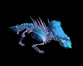 | 片手剣(50) | 首(90) | 帰還(160) | 職業鎧(230) | 肩刺青(300) | イベント(350) | クロー(50) | ||
| 装甲ボーンキメラ3 Zin | アンデット | ボス2 | |||||||
 | 片手剣(270) | 状態異常回復2(450) | 腕刺青(810) | 職業鎧(1170) | 槍投擲機(1530) | 兜・帽子(1800) | クロー(270) | ||
| ハイエルフ Zin | 人間 | 一般4 | |||||||
 | 片手剣(50) | ブローチ(150) | 足(100) | 能力向上1(80) | 両手剣(20) | 兜・帽子(30) | 鎌(20) | クロー(50) | |
| ハイエルフ1 Zin | 人間 | セミ1 | |||||||
 | 片手剣(90) | イヤリング(260) | 帰還(180) | 槍(140) | 槍投擲機(40) | イベント(50) | クロー(90) | 箒(140) | |
| ハイエルフ3 Zin | 人間 | ボス1 | |||||||
 | 片手剣(250) | イヤリング(750) | 足(500) | 槍(400) | 状態異常回復1(100) | 杖(150) | クロー(250) | 本(150) | 箒(400) |
| ハイエルフ4 Zin | 人間 | ボス2 | |||||||
 | 片手剣(450) | ブローチ(1350) | CP回復(900) | 槍(720) | 肩刺青(180) | 兜・帽子(270) | クロー(450) | 箒(720) | |
| エルフ貴族1 Zin | 人間 | セミ2 | |||||||
 | 片手剣(140) | マント(410) | 能力向上2(280) | 槍(220) | 槍投擲機(60) | 兜・帽子(80) | クロー(140) | 箒(220) | |
| エルフ貴族3 Zin | 人間 | ボス2 | |||||||
 | 片手剣(450) | ブローチ(1350) | 足(900) | 槍(720) | 槍投擲機(180) | 兜・帽子(270) | クロー(450) | 箒(720) | |
| エルフ貴族4 Zin | 人間 | ボス3 | |||||||
 | 片手剣(600) | イヤリング(1800) | 腕刺青(1200) | 鞭(960) | 槍投擲機(240) | 兜・帽子(360) | クロー(600) | ||
| エルフガーディア Zin | 人間 | セミ1 | |||||||
| 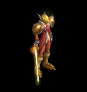 | 片手剣(90) | 状態異常回復2(260) | 足(180) | 十字架(140) | 槍投擲機(40) | CP回復(50) | クロー(90) | ||
| エルフガーディア1 Zin | 人間 | セミ3 | |||||||
 | 片手剣(180) | ブローチ(530) | 帰還(350) | 槍(280) | 状態異常回復1(70) | 兜・帽子(110) | クロー(180) | 箒(280) | |
| エルフガーディア3 Zin | 人間 | ボス2 | |||||||
 | 片手剣(450) | イヤリング(1350) | 弾(900) | 能力向上1(720) | 肩刺青(180) | 職業鎧(270) | クロー(450) | ||
| エルフガーディア4 Zin | 人間 | ボス3 | |||||||
 | 片手剣(600) | イヤリング(1800) | 足(1200) | CP回復(960) | 槍投擲機(240) | 兜・帽子(360) | クロー(600) | ||
| 狂魔(狂った悪魔…)1 Zin | 悪魔 | セミ1 | |||||||
 | 片手剣(230) | 爪(280) | 帰還(120) | 鞭(70) | 状態異常回復1(40) | 兜・帽子(20) | クロー(230) | ||
| 狂魔(狂った悪魔…)2 Zin | 悪魔 | セミ2 | |||||||
 | 片手剣(360) | 状態異常回復2(440) | スリング(180) | 能力向上1(110) | 矢(60) | 兜・帽子(30) | クロー(360) | 魔弾(60) | |
| 狂魔(狂った悪魔…)3 Zin | 悪魔 | ボス1 | |||||||
 | 片手剣(650) | ブローチ(800) | 腕刺青(330) | 鞭(200) | 矢(100) | イベント(50) | クロー(650) | 魔弾(100) | |
| 狂魔(狂った悪魔…)4 Zin | 悪魔 | ボス2 | |||||||
 | 片手剣(1170) | 爪(1440) | スリング(590) | 鞭(360) | 矢(180) | 兜・帽子(90) | クロー(1170) | 魔弾(180) | |
| ゴールデンマスク Zin | 悪魔 | 一般4 | |||||||
 | 片手剣(130) | ブローチ(160) | スリング(70) | 能力向上1(40) | 状態異常回復1(20) | 兜・帽子(10) | クロー(130) | ||
| ゴールデンマスク2 Zin | 悪魔 | セミ3 | |||||||
 | 片手剣(460) | 爪(560) | 職業鎧(230) | 十字架(140) | 矢(70) | 兜・帽子(40) | クロー(460) | 魔弾(70) | |
| ゴールデンマスク4 Zin | 悪魔 | ボス3 | |||||||
 | 片手剣(1560) | 爪(1920) | CP回復(790) | 鞭(480) | 矢(240) | イベント(120) | クロー(1560) | 魔弾(240) | |
| 剣闘士1 Zin | 悪魔 | セミ2 | |||||||
 | 片手剣(360) | 爪(440) | スリング(180) | 鞭(110) | 状態異常回復1(60) | 兜・帽子(30) | クロー(360) | ||
| 剣闘士2 Zin | 悪魔 | セミ3 | |||||||
 | 片手剣(460) | 爪(560) | 帰還(230) | 鞭(140) | 矢(70) | HP回復(40) | クロー(460) | 魔弾(70) | |
| 剣闘士3 Zin | 悪魔 | ボス2 | |||||||
 | 片手剣(1170) | ブローチ(1440) | スリング(590) | 鞭(360) | 矢(180) | 兜・帽子(90) | クロー(1170) | 魔弾(180) | |
| 土蜘蛛 | 動物 | 一般2 | |||||||
| 片手剣(380) | 投擲(250) | 矢(380) | グローブ(210) | 首(190) | 帰還(150) | クロー(380) | 魔弾(380) | ||
| 皇帝蜘蛛 | 動物 | 一般3 | |||||||
| 片手剣(360) | 槍(240) | 矢(360) | グローブ(200) | 首(180) | 能力向上1(140) | クロー(360) | 箒(240) | 魔弾(360) |
| 女郎蜘蛛 | 動物 | セミ1 | |||||||
| 片手剣(390) | 槍(260) | 矢(390) | グローブ(220) | 首(200) | 帰還(160) | クロー(390) | 箒(260) | 魔弾(390) |
| 猛毒蜘蛛 | 動物 | ボス1 | |||||||
| 片手剣(470) | 投擲(310) | 矢(470) | グローブ(260) | 首(240) | 宝石(190) | クロー(470) | 魔弾(470) | |
| 土蜘蛛 Ex | 動物 | 一般2 | |||||||
| 片手剣(380) | 投擲(250) | 矢(380) | グローブ(210) | 首(190) | 帰還(150) | クロー(380) | 魔弾(380) | ||
| 皇帝蜘蛛 Ex | 動物 | 一般3 | |||||||
| 片手剣(360) | 槍(240) | 矢(360) | グローブ(200) | 首(180) | 能力向上1(140) | クロー(360) | 箒(240) | 魔弾(360) |
| 女郎蜘蛛 Ex | 動物 | セミ1 | |||||||
| 片手剣(450) | 槍(300) | 矢(450) | グローブ(250) | 首(230) | 帰還(180) | クロー(450) | 箒(300) | 魔弾(450) |
| 猛毒蜘蛛 Ex | 動物 | ボス1 | |||||||
| 片手剣(1200) | 投擲(800) | 矢(1200) | グローブ(670) | 首(600) | 宝石(480) | クロー(1200) | 魔弾(1200) | |
| ブルーニックス | 神獣 | 一般2 | |||||||
| クロー(250) | 鈍器(100) | 片手剣(250) | ||||||
| ブルーメロウ | 神獣 | 一般3 | |||||||
| クロー(240) | 鈍器(100) | 片手剣(240) | ||||||
| ブルーマーマン | 神獣 | 一般4 | |||||||
| クロー(200) | 鈍器(100) | 片手剣(200) | ||||||
| マーマンウォリア | 神獣 | セミ2 | |||||||
| クロー(280) | 鈍器(100) | 片手剣(280) | ||||||
| ポセイドン | 神獣 | ボス2 | |||||||
| クロー(330) | 鈍器(100) | 片手剣(330) | |||||||
| ブルーニックス Ex | 神獣 | 一般2 | |||||||
| 鈍器(380) | 片手剣(250) | 鍵(30) | 鎧(210) | イヤリング(190) | 肩刺青(110) | クロー(250) | ||
| ブルーメロウ Ex | 神獣 | 一般3 | |||||||
| 鈍器(360) | 片手剣(240) | イベント(360) | 鎧(200) | イヤリング(180) | 肩刺青(120) | クロー(240) | ||
| ブルーマーマン Ex | 神獣 | 一般4 | |||||||
| 鈍器(300) | 片手剣(200) | イベント(300) | 鎧(170) | イヤリング(150) | 肩刺青(130) | クロー(200) | ||
| マーマンウォリア Ex | 神獣 | セミ2 | |||||||
| 鈍器(650) | 片手剣(430) | イベント(650) | 鎧(360) | イヤリング(330) | 肩刺青(140) | クロー(430) | ||
| デーモン将軍 | 悪魔 | セミ3 | |||||||
| 槍(450) | 片手剣(300) | 弾(450) | 職業鎧(250) | 爪(230) | 特殊1(180) | クロー(300) | 箒(450) | ||
| デーモン将軍 Ex | 悪魔 | セミ3 | |||||||
| 槍(800) | 片手剣(530) | 弾(800) | 職業鎧(440) | 爪(400) | 特殊1(320) | クロー(530) | 箒(800) | ||
| ポセイドン Ex | 神獣 | ボス2 | |||||||
| 鈍器(2000) | 片手剣(1330) | 鍵(210) | 鎧(1110) | イヤリング(1000) | 肩刺青(150) | クロー(1330) | |||
| ボーンドラゴン Zin | アンデット | 一般4 | |||||||
| 片手剣(30) | 首(50) | 牙(90) | 職業鎧(130) | 状態異常回復1(170) | 兜・帽子(200) | クロー(30) | 双剣(90) | |
| ハイエルフ Zin | 人間 | 一般4 | |||||||
| 片手剣(50) | ブローチ(150) | 足(100) | 能力向上1(80) | 両手剣(20) | 兜・帽子(30) | 鎌(20) | クロー(50) | |
| ハゲワシ闘士 Zin | 悪魔 | セミ1 | |||||||
| 片手剣(1380) | 弓(920) | 盾(1380) | グローブ(770) | 手首(690) | 腕刺青(120) | クロー(1380) | 銃(920) | |
| イーグル狂戦士 Zin | 悪魔 | セミ1 | |||||||
| 片手剣(1560) | 弓(1040) | 矢(1560) | グローブ(870) | 手首(780) | 腕刺青(130) | クロー(1560) | 銃(1040) | 魔弾(1560) |
| ハゲワシ剣士 Zin | 悪魔 | セミ1 | |||||||
| 片手剣(650) | 両手剣(430) | 盾(650) | グローブ(360) | 手首(330) | 腕刺青(140) | 鎌(430) | クロー(650) | |
| ハゲワシ勇者 Zin | 悪魔 | ボス1 | |||||||
| 片手剣(1000) | 弓(670) | 盾(1000) | グローブ(560) | 手首(500) | 腕刺青(150) | クロー(1000) | 銃(670) | |
| 時の木 Zin | 神獣 | セミ1 | |||||||
| 杖(1200) | 片手剣(800) | HP回復(1200) | グローブ(670) | 首(600) | 能力向上1(480) | クロー(800) | 本(1200) | |
| ダークアーチャー Zin | 人間 | ボス1 | |||||||
| 弓(1000) | 片手剣(670) | イベント(1000) | グローブ(560) | 手首(500) | 腕刺青(190) | クロー(670) | 銃(1000) | |
| ボーンドラゴン Zin | アンデット | 一般4 | |||||||
| 片手剣(30) | 首(50) | 牙(90) | 職業鎧(130) | 状態異常回復1(170) | 兜・帽子(200) | クロー(30) | 双剣(90) | |
| ハイエルフ Zin | 人間 | 一般4 | |||||||
| 片手剣(50) | ブローチ(150) | 足(100) | 能力向上1(80) | 両手剣(20) | 兜・帽子(30) | 鎌(20) | クロー(50) | |
| 鎧霊Ev | アンデット | 一般3 | |||||||
| 弓(1560) | 片手剣(1040) | 弾(1560) | 鎧(870) | 首(780) | 能力向上1(620) | クロー(1040) | 銃(1560) | |
| 鷲狂戦士Ev | 悪魔 | 一般3 | |||||||
| 片手剣(1560) | 弓(1040) | 矢(1560) | グローブ(870) | 手首(780) | 腕刺青(130) | クロー(1560) | 銃(1040) | 魔弾(1560) |
| ソードスパイダーEv | 動物 | 一般3 | |||||||
| 片手剣(1560) | 槍(1040) | 矢(1560) | グローブ(870) | 首(780) | 能力向上1(620) | クロー(1560) | 箒(1040) | 魔弾(1560) |
| 骸骨剣士Ev | アンデット | 一般3 | |||||||
| 片手剣(1560) | 弓(1040) | 矢(1560) | 兜・帽子(870) | 槍投擲機(780) | 帰還(620) | クロー(1560) | 銃(1040) | 魔弾(1560) |
| シューターEv | 人間 | 一般3 | |||||||
| 弓(1560) | 片手剣(1040) | 矢(1560) | グローブ(870) | 手首(780) | 腕刺青(170) | クロー(1040) | 銃(1560) | 魔弾(1560) |
| エルフ戦士Ev | 人間 | 一般3 | |||||||
| 片手剣(1560) | 弓(1040) | 矢(1560) | 鎧(870) | 指輪(780) | 腕刺青(120) | クロー(1560) | 銃(1040) | 魔弾(1560) | |
| メロウEv | 神獣 | 一般3 | |||||||
| 鈍器(1560) | 片手剣(1040) | イベント(1560) | 鎧(870) | イヤリング(780) | 肩刺青(120) | クロー(1040) | ||
| マーマンEv | 神獣 | 一般4 | |||||||
| 鈍器(1200) | 片手剣(800) | イベント(1200) | 鎧(670) | イヤリング(600) | 肩刺青(130) | クロー(800) | ||
| エルフ暗殺者Ev | 人間 | 一般4 | |||||||
| 片手剣(1200) | 投擲(800) | 盾(1200) | 兜・帽子(670) | 指輪(600) | 腕刺青(130) | クロー(1200) | |||
| クローラーEv | 動物 | 一般4 | |||||||
| 鈍器(1200) | 片手剣(800) | イベント(1200) | マント(670) | 冠(600) | 帰還(480) | クロー(800) | ||
| エルフガーディアEv | 人間 | セミ3 | |||||||
| 片手剣(180) | ブローチ(530) | 帰還(350) | 槍(280) | 状態異常回復1(70) | 兜・帽子(110) | クロー(180) | 箒(280) | |
| 両刀骸骨戦士Sp | アンデット | 一般4 | |||||||
| 片手剣(1200) | 弓(800) | 矢(1200) | 兜・帽子(700) | 槍投擲機(600) | 帰還(500) | クロー(1200) | 銃(800) | 魔弾(1200) |
| 狂魔Sp | 悪魔 | 一般4 | |||||||
 | 片手剣(1200) | ブローチ(1400) | 投擲(1400) | 鞭(100) | 矢(200) | 兜・帽子(100) | クロー(1100) | 魔弾(200) | |
| 狂魔Sp | 悪魔 | セミ1 | |||||||
 | 片手剣(600) | 爪(700) | スリング(200) | 翼(1100) | 状態異常回復1(100) | 兜・帽子(200) | クロー(400) | 水晶(1100) | |
| ブルーエリゲイト4 Sp | アンデット | セミ1 | |||||||
| 片手剣(300) | 首(500) | 十字架(900) | 能力向上2(500) | 兜・帽子(1000) | クロー(1100) | |||
| 狂魔2 Sp | 悪魔 | セミ1 | |||||||
| 片手剣(600) | 爪(700) | スリング(200) | 翼(1100) | 状態異常回復1(100) | 兜・帽子(200) | クロー(400) | 水晶(1100) | |
| ハイエルフ Sp | 人間 | 一般4 | |||||||
 | 片手剣(50) | ブローチ(150) | 足(100) | 能力向上1(80) | 両手剣(20) | 兜・帽子(30) | 鎌(20) | クロー(50) |